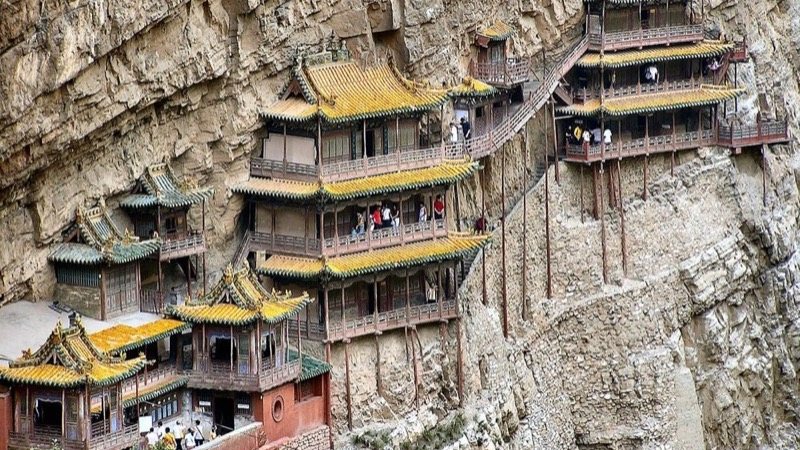
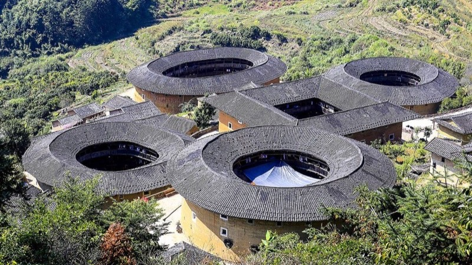

Wanderlust
漫游 · 发现 · 细品
日本

大分自驾游
从福冈出发，自驾由布院、国东半岛、别府与臼杵
3–4 天自驾最佳：11 月
冬季冲绳
青之洞窟浮潜、美丽海水族馆、首里城和冲绳美食
3–4 天自驾最佳：4–5 月、10–11 月
九州陶瓷与长崎自驾
从福冈出发：太宰府、有田瓷器、武雄、长崎和唐津
4 天自驾最佳：10–11 月

福冈艺术之旅与一日游
只住一家酒店：美术馆和 teamLab，坐火车去长崎和熊本一日游
4 天城市据点、火车最佳：10–11 月、3–4 月
中国

上海—内蒙古环线自驾
环线：古都、石窟、沙漠与草原
21 天自驾最佳：9 月

东北边境环线自驾
沿中朝、中俄边境环线
21 天自驾最佳：9 月

上海—广州沿海自驾
沿海南下：宁波、温州、福州、厦门、土楼、潮汕和广州
21 天自驾最佳：10 月下旬–11 月中旬
关于这些调研：信息来源、价格和预算的计算方法、查询日期。